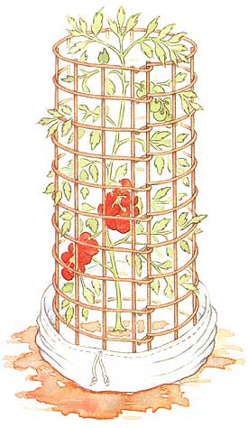
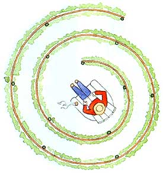
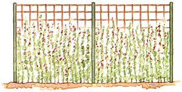
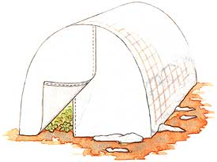
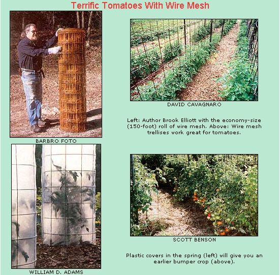

Wire mesh is at the top of my list of things that make vegetable gardening easier and more efficient. Intended for reinforcing concrete, the stiff 6x6-inch wire mesh makes perfect cages to support tomatoes or other tall crops. It also works beautifully for constructing trellises and fences. Combine it with plastic sheeting or row cover fabric and you can make minigreenhouses for season-extension and isolation cages for protection against pests or to assure seed purity.
Understand: I'm not talking about woven-wire fencing. Although woven wire can serve many of the same functions, it is expensive (due to galvanization and manufacturing methods) and difficult to work with (because of the hardness of the wire). Concrete reinforcing mesh, made of softer, 9-gauge wire, is inexpensive, stiff enough to make sturdy cages and easy to work with using pliers and wire cutters.
You can usually tell the difference just by looking at the mesh. Concrete-reinforcing wire oxidizes easily and often is already rusted when you buy it. Woven wire, because of its galvanized coating, remains bright for many years.
Reinforcing wire comes in flat panels measuring 10 feet long, 50-foot rolls and 150-foot rolls. In all cases, the mesh is 5 feet wide. The single sheets are the most expensive, and the 150-foot rolls are the cheapest. Depending on where you live, a 5x150-foot roll of mesh costs $50 to $60. Given the number of uses it has in the garden, it makes sense to buy the longer rolls.
The simplest method of using the mesh is for straight fencing and trellising to support tomatoes, beans and other vining plants, such as cucumbers and even melons. For instance, Scott Benson, in Upstate New York, grew out 100 tomato varieties on such fencing last year. Scott used 5x10-foot panels for this, because he feels it is aesthetically more pleasing and has safer edges than panels cut from a roll: an important consideration for him because his grow-out was part of a high school project.
To erect them he used 6½-foot steel T-posts spaced 5 feet apart. The wire mesh was attached using pull-tight plastic bundling straps. He wound up with seven 70-foot rows that stood up to "the fiercest winds we've had in a long time."
Mesh makes neat, perfectly even fence rows. At $5 a panel, the wire cost Scott $35 a row. Using rolled wire, that same row would have cost less than $25 and would have required fewer T-posts. It would, however, have waves and warps instead of being perfectly straight.
Nothing says you must have straight rows, either. Wire mesh lends itself to gentle curves and sharp bends, so you can use it to construct fences in any configuration you like.
Perhaps the ultimate in this flexible potential, if you have the room, is to construct a spiral maze. Merely uncoil the roll of mesh so there are 3 feet or so between each coil. Periodically support the wire with a pole. Plant beans, peas, grapes or other vining plants along the length of the wire, and you'll have a living maze. You can even place a chair at the center for a pleasant reading nook or some private sunbathing.
Instead of straight fences, a more common use of the mesh is to construct tomato towers, used in lieu of the ubiquitous tomato cages found in every garden center and hardware store.
What's wrong with store-bought tomato cages? They are too flimsy, too short and too expensive. Even the larger ones (they come in three sizes) are far too small to adequately support an indeterminate tomato plant, providing only 2½ feet of height. What's more, the wire used for them is so flimsy, just the weight of the plant often causes them to collapse. As for cost, last year they sold for $4 each where I live in Kentucky.
On the other hand, wire-mesh towers are strong, durable, inexpensive and tall enough. Towers are typically built to either 18- or 24-inch diameter. Which means you can make 25 to 30 of them from a roll of mesh at a rough cost of only $1.80 to $2.20 each. That's literally twice as much for half the price.
To build these towers of tomato power, first determine the diameter you prefer. A 24-inch diameter requires 6 feet of mesh, while 5 feet will do for an 18-inch diameter tower.
You'll find it easier to work with the roll standing vertically. And, while any pliers with a side-cutter work, I've found one of those mini-bolt cutters does a more efficient job.
When you first start a roll, the end will be closed. That is, there will be a vertical wire. Cut that off, reserving it for other purposes, such as making ground staples for holding row cover material in place. This will leave 11 horizontal prongs.
Measure the length of mesh you need, and cut it off behind the next vertical wire. You'll have a panel of mesh with a vertical wire on one side and 11 prongs on the other. Bend each of those prongs roughly 90 degrees to form hooks at their halfway point. Roll the panel so the hooks fit under the end wire. Then bend them completely back, locking them in place around the wire.
Finally, cut the bottom wire off, leaving a set of 6-inch wire legs on each tower. Contrary to popular wisdom, those legs are enough to stabilize the tower, unless you have windy summer conditions. If you're not confident these legs are long enough, use the cutoff bottom rings to make anchors as long as you need. No other bracing should be necessary.
Commercial tomato cages do have one advantage over these towers: They stack readily and you can store many of them in a relatively small space. You can make your wire-mesh tomato towers stackable too, by making them different diameters. Insert a small one into a large one and you can store twice as many in the same space.
Don't make the mistake, however, of thinking you need merely to reduce them a couple of inches at a time. That doesn't work. I recommend making half of them 24 inches in diameter and half of them 18 inches.
When using the towers for tomatoes, plant your seedling so it will be centered, pushing down on the tower until the first horizontal ring is even with or slightly into the ground. If you use plastic or paper mulch, by the way, the towers themselves will lock it in place and you generally won't need other staples or pins.
Beans, peas and cucumbers will need more than the towers' 5-foot height. If you merely wire two of them together, however, the weight of the vines is likely to topple the upper tower. So in addition to wiring them together (using the feet of the upper tower for that purpose), they need to be staked, using two poles on the inside of the tower.
Use the poles to bridge the two towers and staple the mesh to them. For stability, it's also better to use 2-foot-or even larger-diameter towers when doubling them up.
Combined with covers, the towers can also serve for pest control, keeping unwanted insects away from your seedlings.
While these towers are basically support structures, they can have other uses. For instance, you can extend the season in either direction by covering the mesh with clear plastic or row cover fabric. Simply wrapping the tower with plastic or row cover can help warm the soil and ambient temperature inside the tower, so you can plant two to three weeks earlier in the spring or extend the harvest season that much further in the fall.
Combined with such covers, the towers can also serve for pest control, keeping unwanted insects away from your seedlings. For instance, I experimented last year with some eggplants grown inside a protected cage and others groan free as usual. Flea beetles all lout decimated the free-growing plants, but barely touched those protected by the row cover.
Carrying this idea further, Jeff Nekola, assistant professor of natural and applied sciences at the University of Wisconsin at Green Bay created inexpensive isolation cages to assure seed purity. Jeff is an expert at growing peppers and wanted a way of growing them side by side. Peppers will crossbreed if you look at them cockeyed, so caging becomes necessary when growing more thin one variety close together.
Although standard row cover fabric would work, Jeff wanted something more durable so lie could use it for several years. He found the solution in Tutbell, a specialized heavy-duty row cover material. (Available from Peaceful Valley Farm Supply; P.O. Box 2209, Grass Valley, CA 95945; (888) 784-1722.)
Tufbell has several advantages over other row covers, according to Peaceful Valley's catalog. It's tough and durable and it can be sewn, which means, among other things, that tears and rips can be easily repaired. The individual fibers absorb water, which can contribute to thermal moderation. The catalog describes Tufbell as a "floating row cover of unprecedented strength and durability, made of high-tech PVA (polyvinyl alcohol).
PVA has unique absorption properties that allow moisture to freeze within the row cover fibers and form a protective shield, like an igloo, over the crop. Yet PVA is also breathable (35 percent permeable), allowing crop ventilation during the day. You can water right through it, without need for removal. It also can be repaired easily. Tufbell increases air and soil temperatures by 5 to 10 degrees and leaf temperature by 2 to 6 degrees, yet does not overheat in 90 degree weather. It allows 92 percent to 95 percent light transmittance."
For the isolation cages, Jeff sewed sleeves out of Tufbell that were left open at one end and had a drawstring closure at the other. The open end is slipped over the cage and sealed with soil. The drawstring closure allows entry for weeding, pruning and other chores. Last year Jeff grew some 150 pepper varieties side by side this way and had no problems with cross-pollination.
Jeffs original design used commercial tomato cages, with one pepper plant per cage. I adapted this to wire-mesh towers, planting as many as three pepper plants per isolation unit.
The durability certainly is there. Jeff is going into his fifth year using the sleeves. Mine are in their third year. In theory the Tufbell can last up to 10 years.
For cost accounting, however, I figured on five years. To come up with a worst-case scenario, I presumed the wire cage as well as the Tufbell would have to be replaced. Based on this highly conservative approach, the isolation cages cost a mere dollar per year, cheap enough to install and assure seed purity.
One drawback to these cages is they exclude beneficial insects as well as the bad guys. Sometimes this can cause problems, as when aphids attack. This is easily solved by introducing ladybugs or other beneficials as necessary.
"I wait until I notice an infestation before introducing ladybugs," Jeff says. "A second introduction might be required later in the season, as well."
A side benefit, Jeff points out, is that the ladybugs will switch over to pollen and nectar consumption once they've cleaned out the aphids, increasing the pollination rate of the flowers of whatever crop is grown inside the cages.
Jeff Nekola first saw Tufbell being used on small hoop greenhouses to get an early start on planting out. And that's another great use for the wire mesh.
To create a minigreenhouse, merely uncoil the wire mesh and cut it to make an arch of the height you want. Cut the mesh so there are prongs on both ends. Erect the wire arch in your garden, pushing the prongs into the soil (stake it down in windy areas). Then cut row cover fabric or greenhouse plastic to cover the arch. Cut additional material to fit the ends, then tape or sew in place.
If you make these minigreenhouses out of Tufbell you can use them year after year and enjoy earlier and longer harvests. In addition to serving as season extenders and for pest control, they let you maintain seed purity for plants that are grown in beds, rather than individually. Carrots, radishes and parsnips come immediately to mind.
|
 Christine Erikson These wire towers can support full-size tomato plants, and you can make season-extending covers for the cages. |
 Christine Erikson Plant some scarlet runner beans on your spiral trellis and you'll be watching hummingbirds drawn to the bean flowers. |
 Christine Erikson A minigreenhouse will give you earlier and longer harvests of all kinds of crops. |
|
 Christine Erikson |
 |
|